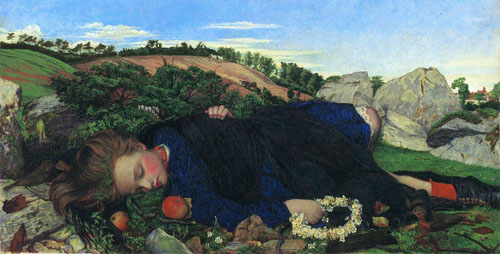

Issue 4 (April 2007)
Rethinking Victorian Sentimentality

Spencer Roddam Spencer Stanhope, Robins of Modern Times, Oil on Canvas, Private Collection, c.1860.
Guest edited by Nicola Bown
Contributors: Emma Mason, Kirstie Blair, Sally Ledger, Heather Tilley,
Sonia Solicari and Marie Banfield
This issue of 19 explores: